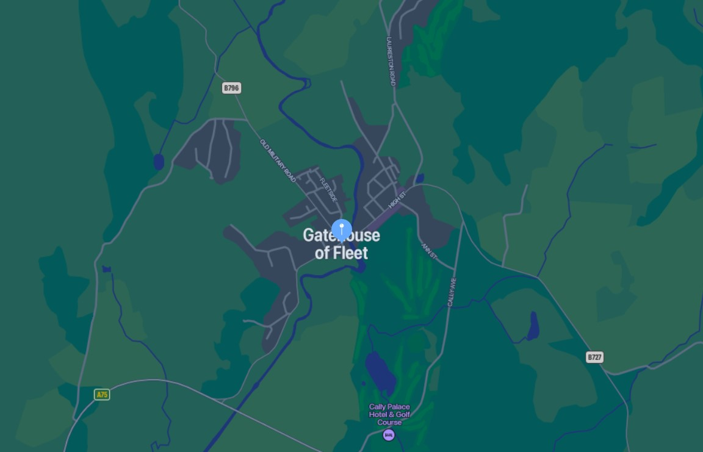

Contact us
Please contact us below via letter, phone or email:
Donald Family farm experience
Donald Farm
Gatehouse of Fleet, DG8 A78
Dumfries and Galloway
0130 09831726
You can find our farm just outside Gatehouse of Fleet on the B796.
